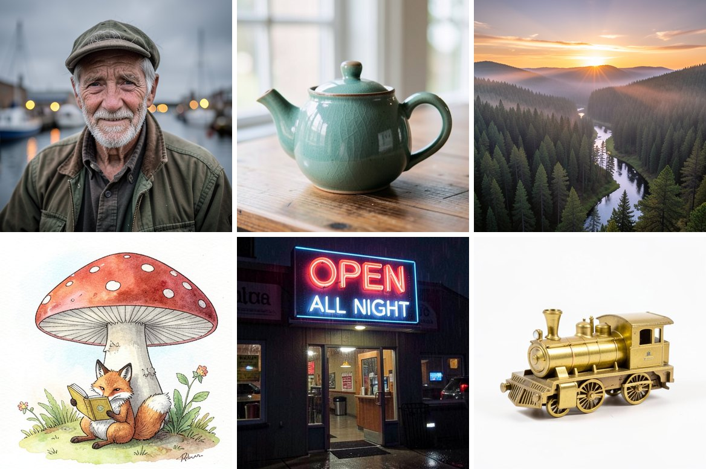

Text-to-image generation on your own GPU through WebGPU. The prompt, the model and the image stay on your machine; no server does any of the work.
The first visit downloads 3.6 GB of model weights, which the browser keeps for later visits. Tested in Chrome on Apple-silicon Macs with 16 GB of memory or more: a 512 × 512 image takes about 7 seconds on an M4 Max and about 20 seconds on an M2 Pro.
This animation draws on the same GPU while an image generates. The inference kit submits the model's work in short pieces and lets each frame through between them.
